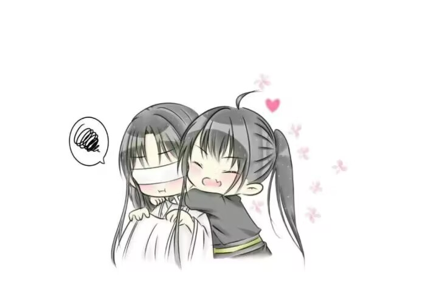

锁麟囊
『一霎时把七情俱已昧尽，渗透了酸辛处泪湿衣襟』 他再次遇见晓星尘时，年方五岁。 距离义城一役已过了许多年，那段往事久远的就像是一个传奇，被时光弃置在某个角落里，落上了经年的灰。当年的动魄惊心，今时就连茶余饭后也不再有人提起，因为毕竟都是往事了。 那真的是非常漫长的一段岁月，久到薛洋尸骨成灰，宋岚青丝化雪，久到晓星尘从一片混沌中苏醒，借着虚空中一股不知名的灵魄之力再塑仙身，重回这滚滚红尘。 人生百年，转眼倥偬，他与旧友斟一壶清茶两两对望，他添了沧桑，他却一如初见，相顾无言，泪已千行。 恍惚间，竟不知今夕何夕。 沉默许久，晓星尘抬起眼，眼底闪烁着漫天星河，比过往更加明亮。 宋岚满怀感慨：“我曾为你的眼睛内疚了许多年，没想到如今你复生又复明，实在太好了。” 白衣道长瞳光流转，缓缓从怀中一白一黑两把宝剑身上掠过，一把清丽洁白、冷如霜花，一把通体乌黑、天生不祥。 他轻声说：“前尘皆忘，就不要再提。”
『想当年我也曾撒娇使性，到今朝那怕我不信前尘』 晓星尘早已下定决心出外云游，自然没有过多停留，他婉拒了宋岚的盛情，宋岚见他去意已决，也不好强求，只能送他一程。 行至郊外时，他们不偏不倚，竟又遇见了那个命中的劫数。 劫数看上去只有五六岁，还是个伶仃稚子，却被一路拖行着往荒野走，满身鲜血，奄奄一息，很可怜的模样。 “请问，这是怎么了？”晓星尘心底仁善，立即上前拦下了村民，宋岚长眉一蹙，显然是不愿见这样血淋淋的场面。 但晓星尘终归是拦下来了，于是他们听到一个添油加醋的乡村志怪故事，地上拖着的孩子是天煞孤星，他是遗腹子，母亲生产他时胎位不正，耗到油尽灯枯，母子二人都不幸身死，他没了气息半个时辰，竟然又突然哇哇大哭，死而复生。村里半仙说这孩子前世造孽太多，今生命格孤煞、亲眷疏离，是个祸星妖孽。 多亏村民心善，容忍他百家饭千家衣长到八岁，也不在意他个性孤僻古怪，可他实在命运不济，前几日竟然招惹了瘟疫，病的半死不活，再不处置恐将村民都染上，只得拉到荒郊野外去，一把火烧个干净，免得让他再为祸世间。 孩子躺在地上，慢慢喘了一口气：“你们最好、最好现在就杀了我，杀不了我，我会让你们都死的很难看的。” 他的声音很低，已是油尽灯枯之兆，但口吻却是那样轻佻而笃定的，仿佛陈述的是一个再平常不过的事实。晓星尘对上他的眼，亮的令人不寒而栗，写满了阴狠与怨毒，像是荒原上最后一匹游荡的孤狼，随时都准备拼个鱼死网破。 他满脸泥污、蓬头垢发，其实是看不大清脸貌的，但那样一双熟悉的眼睛，令宋岚不由得浑身一震，拂雪腾地出鞘，剑指稚子眉间，咬牙道：“……竟然是你。” 孩子不甘示弱，用尽最后的力气瞪回去，眼神陌生而凶狠。 这个孩子有一种让人憎恶的气息，那是属于某种冷血的、恶毒的动物，让他们不约而同地想起了某个被诅咒过的名字。 ——薛洋。 他不怕死的挑衅更是引起了村民的怒火，恨不得当场将他打死，然而晓星尘拦在他们前面，半屈下膝，向着低到尘土中的稚子伸出了手：“把这个孩子交给贫道，是妖是邪，由贫道来辨。” 孩子不握他的手，只是冷冷的盯着他看：“你不杀我，你会后悔的。” 晓星尘偏着头微微一笑，容光璀然，目似晨星，孩子怔怔瞪大眼，心中怅然生出一种陌生的怀念。 趁他走神，晓星尘当即反手一掌，劈晕了他。
『分我一枝珊瑚宝，安他一世凤凰巢』 宋岚不喜欢这个孩子。 那时候宋岚已经不年轻了，眼角额上也早已爬上层层岁月痕迹，他仍是凛然正气的傲雪凌霜，晓星尘也依旧清风朗月，眉眼如初，但彼此都默契对少年时的梦想绝口不提——他们曾那样残忍地直面过人性最阴暗与恶毒的一面，也曾刀剑相向、口出恶言。纵然薛洋一个人扛下了所有的罪责，但裂痕将永远横亘在他们之间。 他们终归回不去了。 晓星尘垂下眼，不再去想那些。将孩子面上血污擦干净了，露出一副秀致的眉目，他竟然是一个出奇漂亮的孩子，难怪就算被断言命格孤煞，也有大姑娘小媳妇愿意施舍他一口稀粥。 “像他吗？”晓星尘突然开了口。 宋岚一时没会过意，愣了好半天才反应过来，恨恨道：“……虽然不像，却一样令人生厌。” 晓星尘微笑起来，榻上的孩子仍然昏睡着，长年的饥饿与疾病让他的身体虚弱异常，薄弱的小小胸膛艰难地起伏着，一下、一下……脆弱的好像下一秒就要死去。 但是最致命的，却并不是这些耽于表面的病痛。 “已经转了一世，长得和上辈子不像，也正常。” “听我一句劝，别再被他可怜兮兮的样子糊弄了。上辈子他那样坏，这一世也不会是个好人的，你难道非要等他再害你一次才知道后悔吗？” “你难道还没有看出来？”晓星尘平静地说，“他的魂魄不全，生来就是要受苦的。” “他的气息颤抖，体质虚浮，且命带凶煞，的确是早夭之象，这些我都知道，可你难道忘了薛洋上辈子是怎么样的？他屠尽常家满门的时候，也不过十五岁。” “ 他的上辈子活得很糟糕，但这辈子是个干干净净的新生，还没有犯过错。”晓星尘伸手托住额头，望着孩子的睡相，唇角浮起一个浅淡的笑意，“既然这辈子我早早遇见了他，就不会让他重蹈上辈子的覆辙。” “他前世秘法邪术用的太多，魂魄承担不起，早已大有损伤，死后堕入轮回，转世投胎后逐渐衰减，今生注定活不过十八岁。” 宋岚愣愣地看向晓星尘。 “你怎么会知道这些？” 晓星尘面无表情。 “因为我的魂魄，就是他用禁术招回来的。” 宋岚面色一变，晓星尘像是浑然未觉，慢慢地说：“我相信人性本恶，但我也相信我自己。” 宋岚目光复杂的望向那一黑一白两把宝剑，长长叹了口气，没再出声了。
『这才是人生难预料，不想团圆在今朝』 他与宋岚谈了很久，黑衣道长终于服了软，临走前嘱咐他，如有危难，一定要立即知会他。 晓星尘一一应下，送别故友离开，再返身回房时，孩子已经醒了。 “你什么时候杀我？”见他回房，孩子立刻警戒起来，强作镇定的抢问。 “要是不杀我，你就放我走。” 他的喉咙受了伤，说出来的声音嘶哑艰涩，像是砂纸在刀锋上刮过。晓星尘蹲下身与他对视，孩子下意识地一抖，立刻连滚带爬地缩到床角戒备地瞪视他。 “我不会杀你，也不会放你。”晓星尘靠着床沿坐下了，侧着头很温柔地一笑，“从今往后，由我照顾你。” “我身上什么也没有，你得不到好处的。”孩子很谨慎，仍旧不肯靠过来。他像只受过许多苦的小兽，尚未长出自卫的獠牙利齿，只能依靠本能躲避伤害。 晓星尘从衣袖里摸出一颗糖果，放在掌心给他看：“我不会伤害你，你过来，我就把糖给你。” 男孩子面上闪过嫌恶的神情，皱着眉头道：“我最讨厌糖。太甜了。” “你怕甜，越显出你人生的苦来吗？”晓星尘了然地微微一笑，正要把糖果收起，却冷不防被孩子扑了过来，一把抢走手中糖果塞进嘴里，兽似的白牙咬得糖果咔咔作响，他恨恨地瞪了晓星尘一眼，嘟着嘴不肯说话了。 晓星尘笑了起来，伸手摸了摸孩子乱糟糟的头发。 “以前的日子不必再提，从今天以后，你就叫薛洋了。” “薛洋？”他僵硬地念了一遍自己的新名字，眼底忽的掠过一抹暗色，白森森的牙在月下闪着冷光。 “道长，我最后说一次，你现在不杀我，将来一定是会后悔的。” 晓星尘淡然一笑。 他说：“好，来日方长，我拭目以待。” - 最开始他们的日子过得磕磕绊绊，主要是薛洋心里别扭，不肯听话。他像只养不熟的小兽，随时想着要逃走，他们住在山里，地形晦涩崎岖，往往都是到了天黑，迷了路的薛洋被晓星尘拎着衣领带回来。 他逃不走，索性就住下来，想方设法给晓星尘找麻烦，晓星尘性子温和柔顺，面对小孩子家幼稚的挑衅只是微微一笑，不接招也不生气，薛洋一腔愤懑挥出去，宛如落在一团轻飘飘的云雾上，想闹都闹不起来。 日子虽然有些小波折，但岁月静好，这样细水长流的过下去，在乱世中已算弥足珍贵。 - 过了一段时日，晓星尘又一次集市上回来时，给薛洋带了一件小小道袍。 衣袂如雪，剪裁适身，和晓星尘身上那件是相同的制式。薛洋皱着眉头苦大仇深举起衣服看了半天，说：“我又不当道士。” 稚子被好好喂养了一段时日，逐渐盈润起来晓星尘道：“子琛所言非虚，你穿上道袍，的确有七分像我。” 薛洋像是想起了什么，脸色难看地噤了声。晓星尘装作浑然不觉，慢慢给薛洋穿上了洁白如雪的道袍，最后垂着头为他系腰封的时候，薛洋突然说了一句。 “你为什么要对我好？” 晓星尘整理了好了衣裳，为他拍平衣服上的褶皱，说：“就当我上辈子欠了你的吧。” “……好吧，你要养我，那就养着吧，横竖我不吃亏。”他咬着牙抵抗了好一会儿，终于还是输给了无尽的温柔，选择了退让与屈服。他上辈子没被人爱过，以至于从此遇见一点温情都恨不得飞蛾扑火，即使魂飞魄散也想多贪恋一刻。 哪怕梦总是要醒的。 隔了一会儿他问道：“既然以后我们要朝夕相处，你总得给我个称呼，你叫我薛洋，我叫你什么？” 晓星尘支着下巴，仿佛是在思考，然后微微笑了一下，说：“名字不过代号，就叫我道长吧。” 薛洋没出声，眼瞳黑沉沉的。
『在此间遇水患痛苦受尽』 他十二岁。 薛洋的叛逆期来的太早，到了真正叛逆的时候反而柔顺起来。他越来越听话，越来越粘人，多半也因为身体的缘故，常年的病痛消磨掉了他的锐气，他再不能像当年那样恣意妄为了。 那时候薛洋的身体已经开始显出衰弱的征兆了，每到夜晚，少年都会在痛苦中挣扎着醒过来，蚕丝般细密而缠绕地囚困住他，虽然不是痛的无法忍受，却怎样也挣脱不开。 他怕痛，怕死，甚至怕黑，什么都怕的不得了，也实在是因为这几年被晓星尘宠的太过，导致他一点苦都不肯吃，一点委屈都不能受。少年第一次被散魂之痛惊醒时，哭嚎声撕裂了半个夜空，晓星尘守在他的榻前，任凭孩子的眼泪打湿他的手掌。 “道长，我会死吗？” 他睁着一双水雾迷蒙的天真眼睛，浮着一层薄弱的水壳，轻触即碎的。他不懂事，撒娇求哄的意味其实远大于恐惧，但晓星尘没有哄他，因为心里清楚知道薛洋的残魂之症只会一天比一天更严重，瞒也瞒不过的。 薛洋的脸颊埋在他的手掌心里，半天得不到回答，终于哭累了，迷迷糊糊睡过去。 次日练剑的时候，晓星尘破例让他坐在一边休息，孩子巴不得偷懒，笑嘻嘻捧着脸坐在树荫下看着白衣道子舞剑，看了一会儿不耐烦了，扁着嘴撒娇：“道长，我好无聊呀，你给我讲个故事吧。” 霜华雪光一闪，倏然回鞘，晓星尘果然坐到了他身边，要给他讲个故事。 “从前，有一个少年。” 这个开头没什么意思，但薛洋也不在乎，毕竟晓星尘肯讲故事就是天大的好事，再无趣他也会配合拍手叫好。 “他年纪不大，本事却不小，十五岁那年，杀光了一户人家上下五十口。”晓星尘很平静地讲下去，“后来，他成了一个大魔头，人人都想杀了他。” “然后呢？” “然后他就被几个大侠杀了，死无全尸。” 薛洋煞有其事的点点头，说：“原来如此，真好玩。” 晓星尘微微一笑：“你呢？你要是遇到这样一个魔头，你想不想杀了他？” “道长都说是魔头了，那当然要杀了。” “可是，他其实身世凄惨，从小被人打骂，吃了很多很多苦头，他之所以那么坏，是因为从来没有人教过他，”晓星尘看着薛洋的脸，“如果是这样，你也想杀他吗？” 薛洋莫名其妙地盯着晓星尘看，很迷惑不解的样子：“他们要死要活随他们去好了，关我什么事？我只要道长和我过得好就行。” 见到晓星尘眉头蹙起，像是不快的样子，薛洋见风使舵，立刻机灵地补上一句：“我错了，道长说他该死，那他就该死无葬身之地，道长说他是好人，那他就是天下第一号的好人。” 薛洋歪着头活泼泼地笑着，那少年人盲目的倚赖、天真的残忍，都令晓星尘不由自主地毛骨悚然，他没有一点自主的决断，善恶正义全都脱胎于陪伴他长大的人，假如这一世薛洋仍旧遇人不淑，他必定又将生成另一个混世魔王。 晓星尘突然用力握住了少年的手，沉默了好久才说。 “还好我遇见你了。” 薛洋似笑非笑：“遇到了道长，我也很高兴。”
『回首繁华如梦渺，残生一线付惊涛』 雨水淅淅沥沥地敲在窗玻璃上，在春日的夜里显得格外清晰。那年薛洋十五岁，男孩子正值发育时期，清晨睡在床上，几乎都能听见骨头拔节的轻微声响。 晓星尘守在榻边，看着少年紧紧地抱着自己的膝头蜷缩成一团，生来残缺的左手死死地抓住晓星尘的手掌，像是溺水的人抓紧了最后一根救命的稻草。他强忍着魂魄不全带来的巨大痛苦，每到夜晚都痛得心胆俱裂，仿佛灵魂被撕成粉碎。这种症状随着他的长大越来越严重，许多次他都痛到休克昏迷。 晓星尘不说话，他握着少年的手，一言不发。 - 他从来没有隐瞒过薛洋什么，包括因灵魄不全而注定早夭的命运。少年人听了以后很平静地接受了这个事实，在某个暮色袭来的黄昏，薛洋坐在茅屋门口，托着腮看着远处连绵无际的山脉，说：“我不怕死的。” 晓星尘静静地看着他。 少年的眼中倒映着一轮金色的夕阳，很轻很轻地说：“只是想到我死了以后，道长还会遇到很多人，也会待他们这样好，我就觉得很嫉妒。” “不会的。”晓星尘浸在落日金黄的余晖中，清朗眉目也像染上一丝怅然，他抱着霜华，缓慢而坚定的说。 “以后再遇见任何人，都不会是你了。” - 夜晚总是格外漫长，大概是因着每一分每一秒都是煎熬。等到熹微的天光终于地照亮了漆黑的房间，晓星尘才感到手掌上传来的握力慢慢放松了下来，他抬起眼，看见少年人紧紧闭着眼，汗水珠子般从苍白的脸上滚落下来，略带戾气的眉目笼着一片厌世的薄雾。 他低低的喘着，像是个久病的老人，因为心知自己时日无多，反而对生死看的格外淡薄。他拽了拽晓星尘，示意白衣的道长靠近来借他一个肩膀。男孩子其实已经生的很高了，不同于晓星尘的清癯，他是一种病态的消瘦，靠着晓星尘的时候，坚硬的骨骼硌得人生疼。 薛洋自己应该也意识到了这一点，他早就不是儿时温软香甜、臂似嫩藕的稚子了，这个年纪再撒娇也很尴尬，少年有点畏缩地盘着长腿，不敢把全身的重量再肆无忌惮的压在晓星尘的身上。 晓星尘感受到薛洋的退缩，于是微微笑了一笑，也偏着脑袋抵着他，两个人像是一对骨血相连的亲生兄弟，在春日的雨夜中互相依偎。 他们听了好一会儿雨，薛洋才轻轻的开了口：“道长，我想问你一个问题。” “问吧。” “我死了之后，你会去做什么？” “未来的事谁知道呢，大概是带上霜华，四海为家吧。”晓星尘在朦胧的天光中轻声说，“……又或者，去完成我当年的梦想，结识一两个知交好友，和他们一起创立一个门派——一个没有偏见、不在乎出身的理想世界。” “要是没有我，你现在就可以去做这些了，”薛洋问，“你不觉得我是个累赘，拖累了你吗？” “世间上的这些事，在我眼里并无轻重之分。”晓星尘看着虚空中的一点，像在凝视着某个不知名的故人，“能够看着你这样平安无虞地长大，我觉得很满足。” “但我很快就会死了，不管我长成一个谦谦君子，又或者长成一个混世魔王，我都活不过十八岁，你这样做有意义吗？” “对我来说，或许只是一段岁月，对你来说，却是一次人生。”晓星尘说，“你长成一个混世魔王，吃很多苦、杀很多人、被很多人恨，到了临死前，回想这一生都过得很痛苦，对你来说太残忍了。” “道长，你对我这么好，我会舍不得死的。”薛洋把脸埋在晓星尘的颈窝里吃吃地笑了起来，过了一会儿，晓星尘发现肩膀处一片湿热。
『他教我收余恨、免娇嗔、且自新、改性情、休恋逝水、苦海回身、早悟兰因』 青年人躺在病榻上，面色苍白，呼吸微弱，当年他来时是这样的，如今他要走了，竟然也是这个模样的。 他很缓慢地呼吸着，青年人薄弱的胸膛上下起伏。一下、一下……像是下一秒就会死去。晓星尘坐在床边静静地凝视着薛洋苍白的脸庞，眼睫低垂，面无表情。 青年慢慢地挤出一个微笑，神情有一瞬间的茫然，唇角不自觉露出一颗稚气的小虎牙，分明还像个孩子。 晓星尘一言不发，静静等他开口。 他像是挣扎了很久，终于长长叹了一口气，轻声说：“晓星尘。” 梦终于要醒了。 “我要告诉你一个秘密……”薛洋缓慢地喘着气，他的五脏六腑都像被揉碎拧烂再重新缝合，连呼吸都痛的撕心裂肺，但他浑然不觉，只是很专注地望着虚空中的某一点，轻轻说，“我是薛洋。” 晓星尘缓缓垂下眼帘：“我知道。” “不，你不知道，”薛洋转眼看他，然后露出一个笑容——那是薛洋惯用的，恶劣而不可一世的微笑，唇角微微一勾，露出天真的虎牙，像是懵懂而无心机，又像是恶毒到了极点，随时想着择人而噬，“我不是什么投胎转世，我就是薛洋！我走了太多邪魔外道，又被人打得魂灵凋落，所幸天不亡我，我游荡多年，终于在魂飞魄散之际遇到了这具刚死的身体，拼着一口气，夺舍上了身。” 他绝望又张狂的厉声大叫：“要不是我法力全失，这具身体又残破不堪，我早溜出去杀人了！道长，你真可怜，上辈子已经被我毁了，这辈子却还要和我这种人纠缠不休，你现在是不是觉得恶心透了——可你怪谁呢？我劝过你杀了我，是你自己不肯啊！” 晓星尘平静的望着他，眼睫微抬，目光虔诚慈悲似万重法，遇者可获无量功德。 薛洋心头一颤。 他不敢置信似的、很慢很慢的说：“……难道这些，你也都知道了？” 晓星尘唇角扬起一个很温柔的微笑，就像过往那些日子安抚黑夜里惶恐而绝望的少年那样，他温和的笑了：“我都知道。” 在他死后的漫长岁月里，薛洋崩溃、尖叫、发誓要杀尽天下人为他陪葬，但最终他只是翻遍古书异录，以心头血作引，自散一魂三魄于虚空中招寻晓星尘的亡灵，在许多许多个漫长无光的夜里，他躺在法阵中瑟瑟发抖，感受着生命与热一点点从身体中流失。他不怕死，却害怕即使魂魄散尽，那个人也永不归来。 “你知道我是薛洋，为什么还要留下我？你难道不知道我是个、是个多恶毒的魔鬼吗……”他的声音发着抖，不可置信地望着晓星尘平静的脸庞，到最后，像是受了天大的委屈一样，眼泪顺着脸庞簌簌地往下落，“你应该恨我的……” 他望着青年人悲恸的脸庞，思绪却不合时宜的回起很多年前，宋岚问他，你为什么还要和这种人纠缠？ 那时候他没有回答。 轮回报应，谁能说得清？薛洋曾害他魂消魄散，这一世是要受报应的，可他偏偏又曾为他逆天改命，自取心头血，只为唤回亡灵，那么这一世，又是他欠了薛洋。 纠纠缠缠、因果报应，他们的命线死死纠缠在一起，于是再也解不开了。 就在那个瞬间，他忽然都释然了。 “薛洋做过很多很多的错事，他罪恶滔天，死不足惜。但人死如灯灭，一切皆空，我不原谅上辈子的你，却也没恨过这辈子的你。”晓星尘向他伸出手，轻轻地抚摸青年人惨白而消瘦的脸颊，“这辈子你做的很好，是个好孩子。” 薛洋浑身一震，他浑身发抖，像是挣扎了很久，终于下定了决心，脸庞慢慢靠近了晓星尘的手心，轻声呜咽了起来。 晓星尘感到温热的泪水落在自己的手心，他没有说话。到了这个时刻，爱恨早就渺然，薛洋作过恶，被很多人憎恨，甚至给过自己无尽的苦痛——但现在的他只是个垂死的病人，这一生干干净净，生命里只有一个晓星尘。 晓星尘说：“因为有你，这十年我过得很好。也许很多年后想起都会觉得快乐，谢谢你。” 薛洋怔怔地望着他，眼里带着一点迷惘、一点犹疑，但是过了很久很久后，他最终长长的叹出了那口气，淤积在胸口百年之久的浊气霎时烟消云散。 一切都要过去了。 青年眼中噙着泪，但还是快乐地笑了起来，笑容很纯粹，唇角露出一颗稚气天真的虎牙。 “上辈子很糟糕……但这一生很好、很快乐，我很满足，谢谢你。” 他像是疲倦极了，慢慢的阖上了眼，脸上的笑意一点点淡了下去，长长的睫毛是对小小的白蝴蝶，不自觉地颤抖着，最终像是要亲吻一朵初开的花，缓缓落了下来。 薛洋死了。 晓星尘一言不发，在他的尸身旁坐了很久很久，最后慢慢站起身，背上了霜华与降灾，步入了浩渺的雨雾中。 春雨依旧淅淅沥沥的下，万物在雨中连绵不绝的生，谁也不在乎是否曾有人无声无息的死。 雨没有停的意思。
